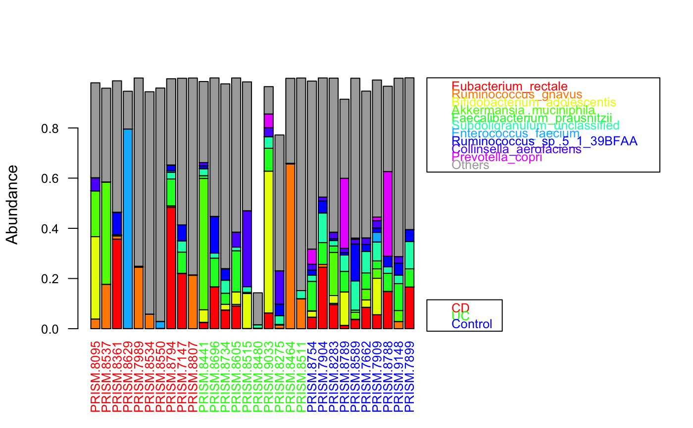
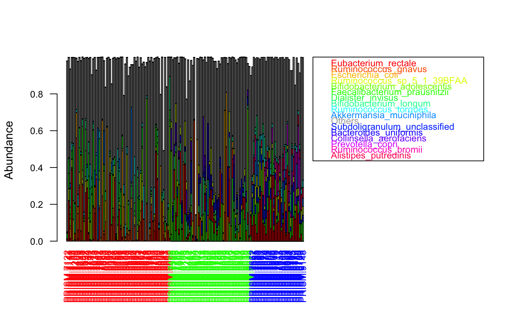
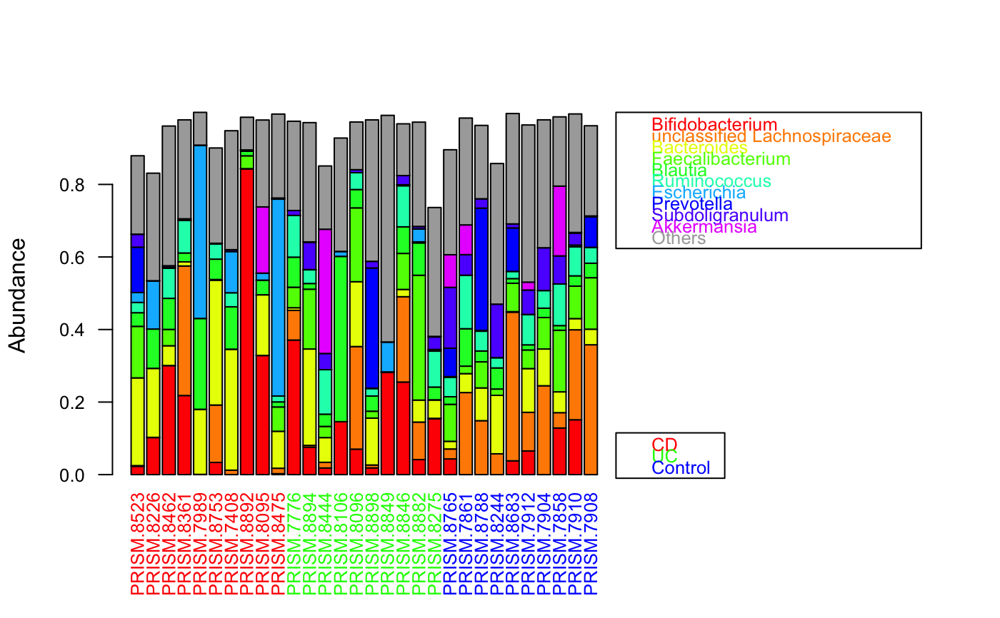

groupBarplot.RdSort taxa by summed abundance across all samples and plot sorted taxon composition with a bar per sample
groupBarplot( abundances, groups = c(), aggregate = "none", taxon.color.map = NULL, group.color.map = NULL, topTaxa = 10, sortGroupwise = TRUE, sumGroupwise = FALSE, group.order = c(), hide.taxa = c(), randSampleNum = NA, summedTaxonColor = "#a9a9a9", extendTaxonColorMap = FALSE, legend = TRUE, legend.shift = 1, legend.hidegroups = FALSE, ... )
| abundances | a matrix with taxa as rows and samples as columns |
|---|---|
| groups | group membership vector with as many entries as samples |
| aggregate | if groups are given, plot the aggregate across the group (or its selected samples if randSampleNum is true); possible values: none, median and mean |
| taxon.color.map | map of taxon-specific colors, should match row names; taxa not present in the color map will be colored in summedTaxonColor |
| group.color.map | map of group-specific colors, should match group names |
| topTaxa | number of top taxa to be plotted |
| sortGroupwise | if true, samples are sorted according to groups |
| sumGroupwise | if true, taxa are summed and sorted separately across samples within each group (if true, samples are always sorted group-wise) |
| group.order | if a vector with group names (one for each group) is given, group samples will be sorted in the order indicated; can also be used to only plot selected groups |
| hide.taxa | do not consider these taxa as top-abundant taxa, but keep them among Others |
| randSampleNum | if larger 0, sortGroupwise is set to true and the indicated sample number is randomly selected for each group |
| summedTaxonColor | the color of the summed taxa, by default gray |
| extendTaxonColorMap | if true, taxa not in the taxon color map are added there and the extended color map is returned |
| legend | add a legend with the color code |
| legend.shift | increase/decrease this parameter to shift the color legend further to the right/left |
| legend.hidegroups | do not show the group memberships in the legend |
| \dots | Additional arguments passed to plot() |
if extendTaxonColorMap is true, the taxon color map is returned
Note that taxa are always summed across all samples, also in the presence of a group membership vector, unless sumGroupwise is true.
data(ibd_taxa) data(ibd_metadata) groups=as.vector(ibd_metadata$Diagnosis) # taxon abundances were prefiltered and therefore do not add up to 1 groupBarplot(ibd_taxa,groups=groups,randSampleNum=10)#> [1] "Number of samples in group CD : 68" #> [1] "Number of samples in group UC : 53" #> [1] "Number of samples in group Control : 34"# sum taxa group-wise for sorting instead across all samples groupBarplot(ibd_taxa,groups=groups,sumGroupwise=TRUE, legend.hidegroups=TRUE)#> [1] "Number of samples in group CD : 68" #> [1] "Number of samples in group UC : 53" #> [1] "Number of samples in group Control : 34"#> [1] "Number of higher-level taxa: 71" #> [1] 71 7groupBarplot(ibd_genera,groups=groups,randSampleNum=10)#> [1] "Number of samples in group CD : 68" #> [1] "Number of samples in group UC : 53" #> [1] "Number of samples in group Control : 34"